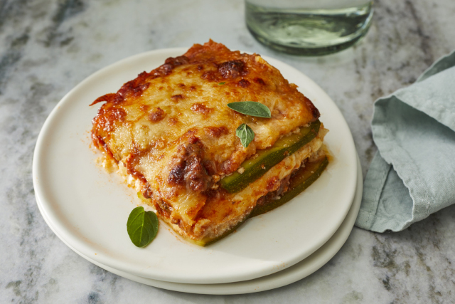

Low carb zucchini lasagna

Zucchini slices step in for pasta in this low-carb and gluten-free beef lasagna that is delicious and satisfying; such a crowd pleaser!
Prep
- Prep: 20 Minutes
- Cook: 1 Hour
- Total Time: 1 Hour 20 Minutes
- Servings: 6
- Yield: one 8 inch baking dish
Ingredients
- cooking spray
- 1 1/2 large zucchinis, thinly sliced lengthwise
- 1 tablespoon olive oil
- 1 pound ground beef
- 1 1/2 cups low-carb marinara sauce
- 2 teaspoons salt, divided
- 1 teaspoon dried oregano
- 1/2 teaspoon ground black pepper
- 1 (8 ounce) container ricotta cheese
- 1 egg
- 1/2 teaspoon ground nutmeg
- 2 cups shredded mozzarella cheese, divided
- 1/2 cup grated Parmesan cheese
Directions
- Preheat oven to 375 degrees F (190 degrees C). Grease an 8-inch baking dish with cooking spray.
- Pat dry zucchini slices with a paper towel to get rid of excess moisture.
- Heat olive oil in a saucepan over medium-high heat. Add ground beef; cook until browned, 5 to 8 minutes. Add marinara sauce, 1 teaspoon salt, oregano, and pepper; simmer for 10 minutes.
- Combine remaining 1 teaspoon salt, ricotta cheese, egg, and nutmeg in a bowl; mix well.
- Make 1 layer of zucchini slices in the prepared baking dish. Cover with 1/2 of the sauce. Add another layer of zucchini slices. Spread ricotta mixture on top. Sprinkle with 1 cup mozzarella cheese. Add another layer of zucchini slices; cover with the remaining sauce and top with 1 cup mozzarella cheese and Parmesan cheese. Cover baking dish with aluminum foil.
- Bake in the preheated oven for 30 minutes. Remove aluminum foil and bake until top is golden, about 15 minutes more.